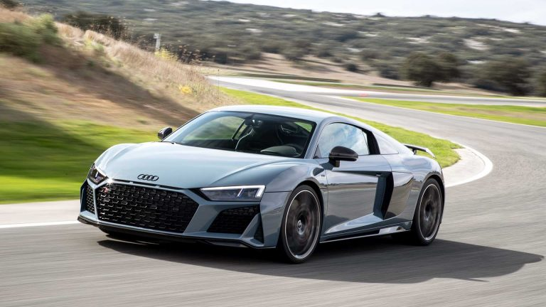
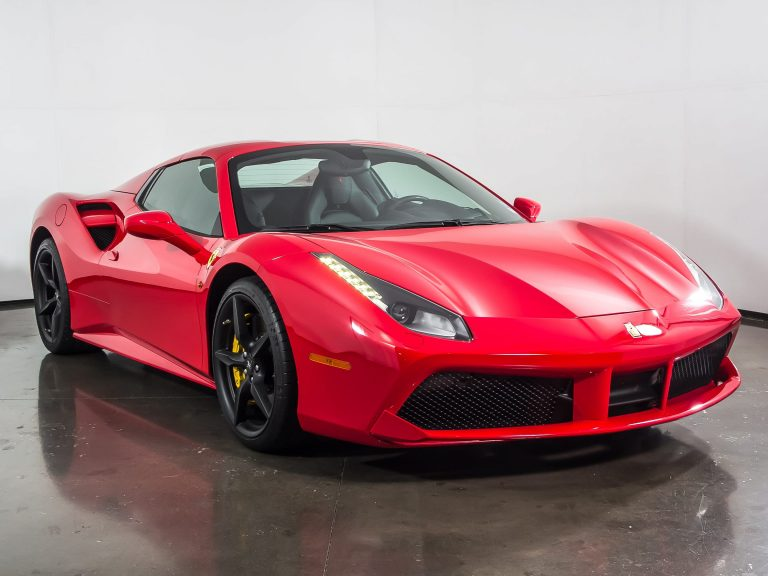
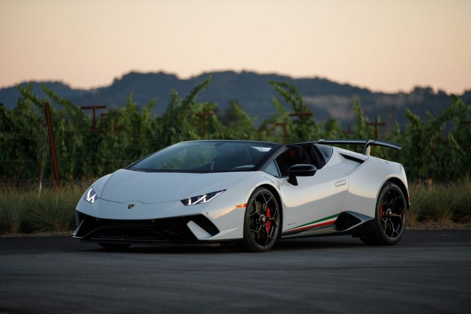

Audi R8
Price Starting From:-Rs 2.72 Crore
The Audi R8 is one of the best-known supercars in the world thanks to its sleek recognizable design. Under the hood of the R8 sits a 5.2L V10 petrol engine that produces 610Ps of power and 570Nm of torque. It is also mated to a 7-speed dual-clutch S-Tronic transmission system which takes the R8 to a top speed of 330kmph and can go from 0-100kmph in 3.2 seconds.
Mercedes-Benz AMG GT

Price Starting From:-Rs 2.27 – 2.33 Crore
Mercedes-Benz has always been a brand associated with luxury and class and their AMG GT model brings all that into super car design. The car is powered by a 4.0L Twin-Turbo V8 petrol engine which offers 585Ps of power along with 700Nm of torque. The transmission on offer is a 7-speed dual-clutch gearbox. The AMG GT is capable of hitting speeds of up to 318kmph with an acceleration of 0-100kmph in 3.6 seconds.
Ferrari 488
Price Starting From:-Rs 4.40 Crore
Powering the Ferrari 488 is a 3.9L Twin-Turbocharged V8 petrol engine that produces 661bhp and 760Nm of torque. The car can go from 0-100kmph in just 3 seconds and can reach speeds of 0-200kmph in an impressive 8.3 seconds. The engine comes with a 7-speed dual-clutch automatic transmission setup.
Lamborghini Huracan
Starting From:-Rs 2.99 – 3.43 Crore
When you think of supercars, Lamborghini is a name that immediately comes to mind and the Huracan is one of their finest cars available in the country. The car packs a 5.2L Naturally-Aspirated V10 petrol engine that offers 640bhp and 600Nm of torque. It is mated to a 7-speed Dual-Clutch automatic transmission system and has a top speed of 325kmph. The car can also go from 0-100kmph in just 2.9 seconds.